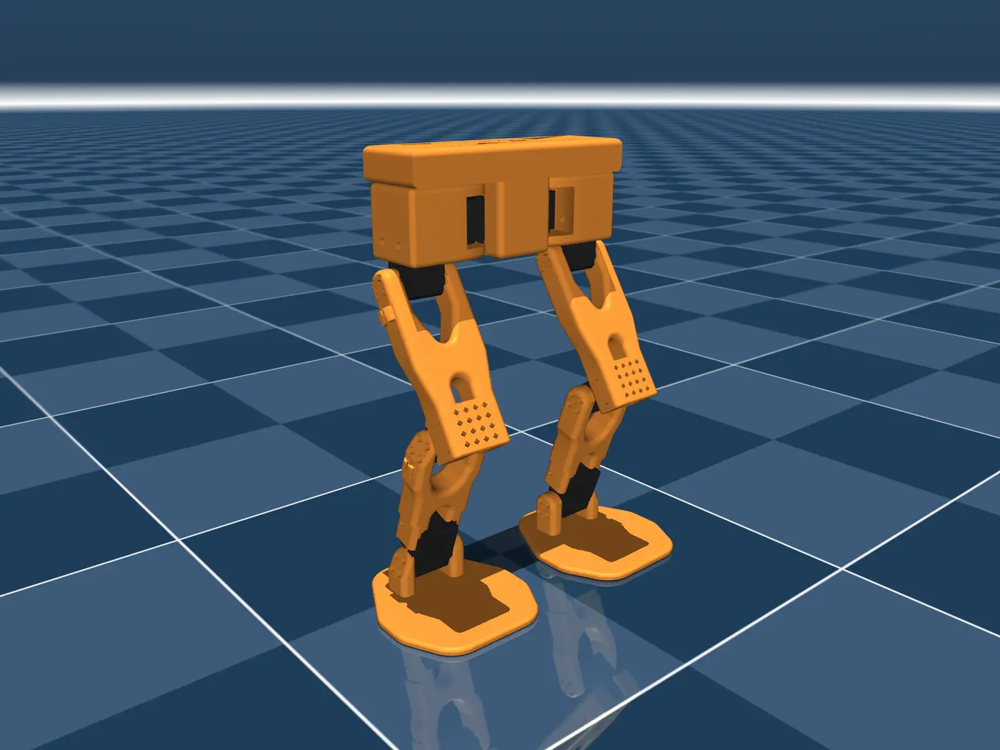
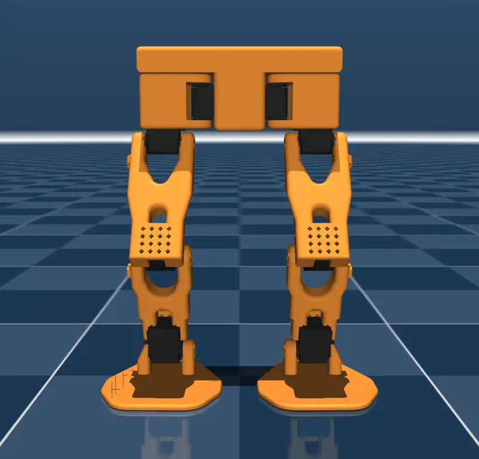
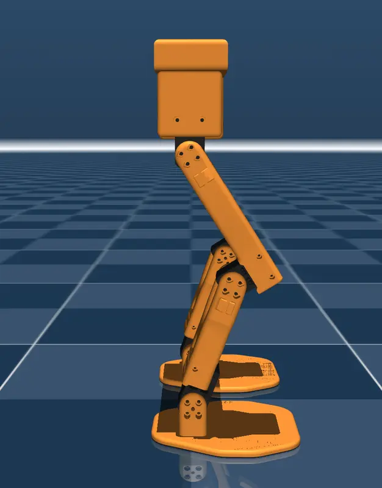
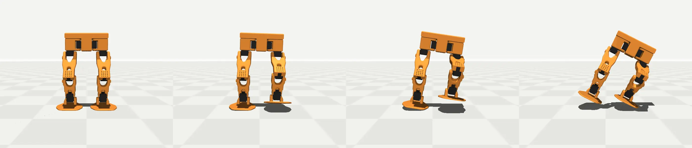
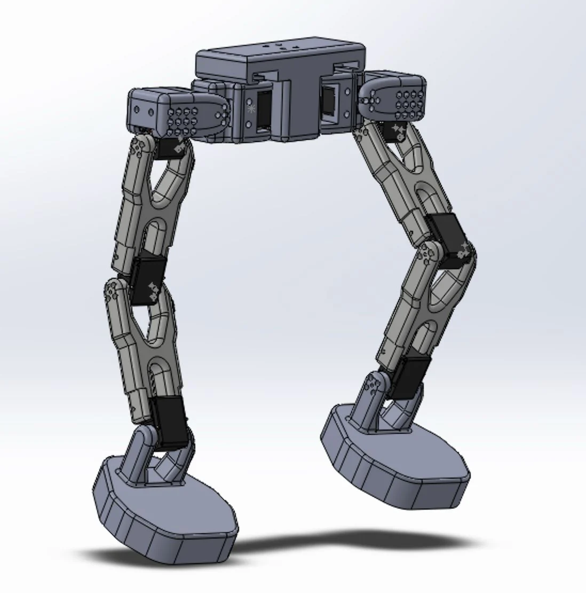
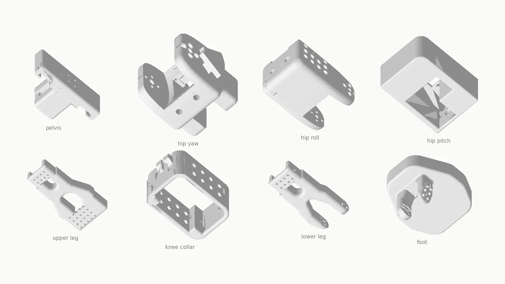

Legged robotics · Open hardware
Open-source humanoid legs for the SO-101 platform
The SO-101 arm made a capable robot arm cheap enough to print and build at home. I'm designing a pair of humanoid legs that reuse the same parts: the STS3215 servos and control boards from an SO-101 leader and follower kit, with a 3D-printed structure. Work in progress.

Aim
The SO-101 arm is widely used because it is cheap, printable and uses one motor type throughout. I could not find an equivalent for a bipedal lower body. Open bipeds either use expensive actuators or are not designed to be printed at home.
The main constraint is to reuse the SO-101 package. Someone with a leader and follower kit should be able to build the legs from the parts they already have, then use them to learn bipedal control and collect training data for learned policies.
- Only Feetech STS3215 servos from an SO-101 kit. This fixes the torque and speed available, and the design has to work within it.
- Fully printable on a consumer FDM printer, with no machined parts.
- Carries the SO-101 control boards and optionally a battery, or runs tethered.
- A light printed torso for an IMU, with foot force sensing planned.
Servo allocation
Version 3 uses 8 of the servos in a leader and follower kit. The six follower servos (12 V, 1/345 gearing, about 2.9 Nm stall) drive the hip pitch, knee and ankle joints. The two hip yaw joints use a matched pair of leader servos (7.4 V, 1/191 gearing). The remaining leader servos are spares.
Version 3
Version 2 had five joints per leg, with hip roll and pitch in one printed module. For version 3 I made the feet smaller, gave the knee more range, shortened the lower leg and moved the legs closer together. To bring the legs closer I took out the hip roll joint for a first test, leaving hip yaw, hip pitch, knee and ankle pitch on each leg.


Simulation
I built a MuJoCo model straight from the CAD. Each link is exported from SolidWorks as its own STL, and a script does the rest:
- finds each joint axis from the servo horn geometry in the meshes
- estimates link mass from mesh volume, assuming 20% infill PLA plus 55 g per servo
- sweeps each joint until parts collide and sets the limit 5° short of contact
- mirrors the right leg from the left and writes the model file
When the CAD changes, the model rebuilds with one command. It has position actuators with a torque limit per motor, an IMU on the pelvis, a touch sensor under each foot, and joint position sensing. The sweep gave hip pitch −80° to +110°, knee −26° to +150°, ankle −93° to +98° and hip yaw −11° to +9°. Yaw is limited by the hip bracket hitting the pelvis wall at about 14°.
Removing hip roll
The simulation showed that version 3 cannot balance sideways. Every joint except yaw is a pitch joint, so nothing can shift the body over one foot. The centre of mass sits on the centre line, 18 mm inside the inner edge of each foot. When one foot lifts, the robot tips towards it and has no joint to catch itself. Finding this in simulation meant no parts were printed for a design that could not stand on one leg.

There are three options I'm weighing:
- Put a roll joint back, at the hip or the ankle, and test it in simulation before changing the CAD. This uses one more servo per leg, and the kit has spares.
- Reshape the feet so one foot can reach under the centre of mass.
- Keep version 3 and see whether a reinforcement learning policy can find a rocking gait.
Next
After the balance fix: update the CAD and rebuild the model, tune the actuator parameters against real servos (stiffness, damping and friction are estimates for now), match the simulation zero to the servo centre position, and develop a gait. I plan to train the gait with reinforcement learning in MuJoCo, since that fits the sim-to-real and data collection goals. Then print and assemble.
The version 2 CAD, STLs and servo model are in the repository under CC BY-SA 4.0. Version 3 and the MuJoCo model will follow.

